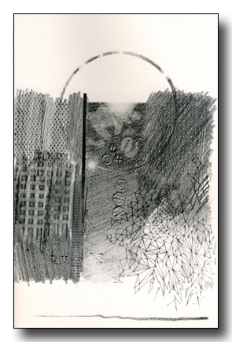

|
VI
A rose dawn, in smoke, over the East River:
light is reflected from the keel of clouds
along Park Avenue's soiled streaks of snow.
My sense attends the shiftings of the cold.
Something—something reaches out behind the semblance:
dimness with claws, brutal and serene.
The sun rises across pale roofs of asphalt.
A car stops at the red on 95th, which clicks to green.
|
A man with a briefcase hurries to the corner,
hails a cab, speeds off in a spray of slush;
the newspaper boy in scarlet stocking cap
trundles his squeaking cart from block to block . . .
How shall I fix your shape or speak your name,
great glow-eyed Cat crouched at the roots of being?
This traffic of shadows between dark and light
obscures the pure insistence of your gaze.
And yet, extended from invisible sunlight,
it's straitly in that gaze the shadows live,
rehearse the permutations of their fates
and win such vision as may view themselves.
Somewhere, in an antiworld,
a man has risen and looks out from his window;
his face is mine, but if we should shake hands
all worlds, thoughts, gods would find their fiery end,
being reduced to simplicity,
God, who are Any, All and None — in one.
Now, please, retire; and claws be sheathed.
Cold and bright the day's begun.
|
 |
 Poems of the Two Worlds, 1977 limited edition
Poems of the Two Worlds, 1977 limited edition